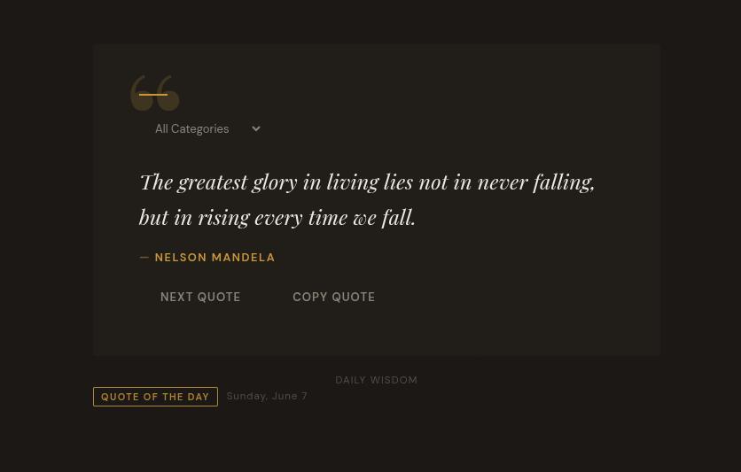

This project uses quotes and displays them to the user.
I am a student at HSTAT in the Software Engineering Program. The "Freedom Project" for SEP11 is a year-long project all about making something using JavaScript along with a third-party JS tool. For my project, I chose to independently study JSON api's in order to help me make random quote generator.
Some of the challenges i faced was trying to figure out the method for inputting quotes on the screen without breaking the code because it felt confusing and complicated. Another challenege I found while making my project was trying to create 2 different quotes at the same time because getting two quotes at the same time makes it more difficult for the server to process that information and display it properly without problems since it just broke down when i changed one small code detail on the main quotes.
Some of the takeaways i can say for myself is to take my time finding out the solution to certain problems like the quotes because if you rush things then the path is more diffcult because of unexpected errors and broken code found later on in the project. Another takeaway about the project is that you should take into account the process and difficulty of an idea so that when it is time to show it off you have a working version/mvp that does not have errors as well as being simple enough that adding mutiple details to the code does not result in big issues.
Taking into account these ideas I plan to the project more tool dependent based because it feels much more easier to just take quotes from the server and show the user words of wise people. Also I have more ideas like running more complicated designs of the project and adding even more small details. I would also like to make it more vibrant that even younger audiences would find it creative and easy to understand.
Link about the project